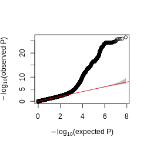
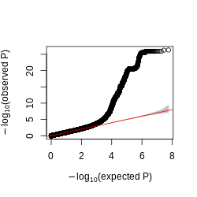
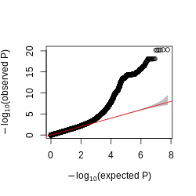
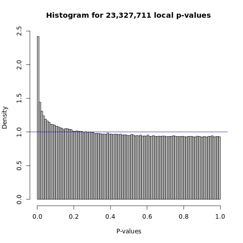
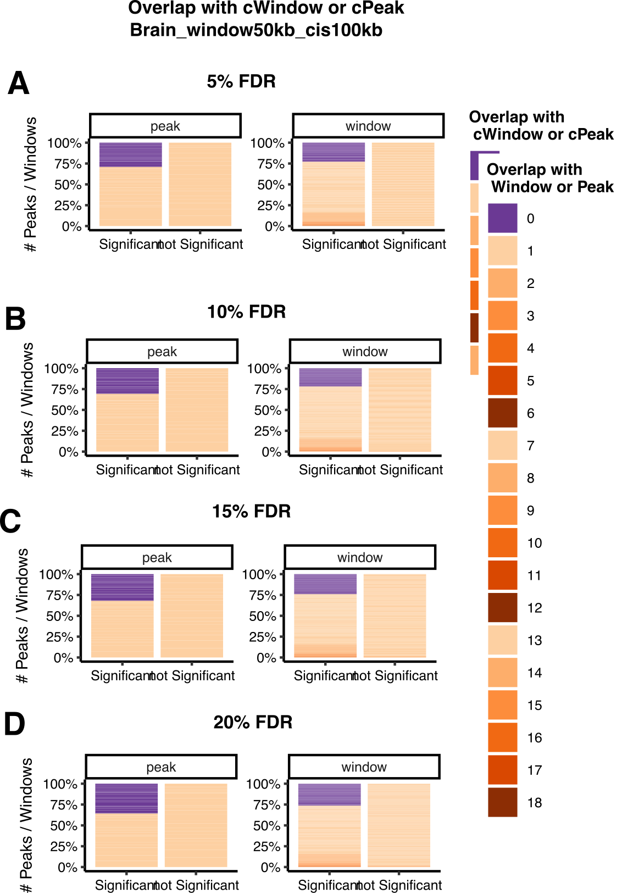

Log2024
Last updated: 2024-05-16
Checks: 6 1
Knit directory: GradLog/
This reproducible R Markdown analysis was created with workflowr (version 1.7.0). The Checks tab describes the reproducibility checks that were applied when the results were created. The Past versions tab lists the development history.
The R Markdown file has unstaged changes. To know which version of
the R Markdown file created these results, you’ll want to first commit
it to the Git repo. If you’re still working on the analysis, you can
ignore this warning. When you’re finished, you can run
wflow_publish to commit the R Markdown file and build the
HTML.
Great job! The global environment was empty. Objects defined in the global environment can affect the analysis in your R Markdown file in unknown ways. For reproduciblity it’s best to always run the code in an empty environment.
The command set.seed(20201014) was run prior to running
the code in the R Markdown file. Setting a seed ensures that any results
that rely on randomness, e.g. subsampling or permutations, are
reproducible.
Great job! Recording the operating system, R version, and package versions is critical for reproducibility.
Nice! There were no cached chunks for this analysis, so you can be confident that you successfully produced the results during this run.
Great job! Using relative paths to the files within your workflowr project makes it easier to run your code on other machines.
Great! You are using Git for version control. Tracking code development and connecting the code version to the results is critical for reproducibility.
The results in this page were generated with repository version 37af3e0. See the Past versions tab to see a history of the changes made to the R Markdown and HTML files.
Note that you need to be careful to ensure that all relevant files for
the analysis have been committed to Git prior to generating the results
(you can use wflow_publish or
wflow_git_commit). workflowr only checks the R Markdown
file, but you know if there are other scripts or data files that it
depends on. Below is the status of the Git repository when the results
were generated:
Ignored files:
Ignored: .DS_Store
Ignored: .Rhistory
Ignored: .Rproj.user/
Ignored: analysis/.DS_Store
Ignored: analysis/.Rhistory
Unstaged changes:
Modified: .gitignore
Modified: analysis/Log2024_new_beginning.Rmd
Modified: analysis/style.css
Modified: analysis/week_log.Rmd
Note that any generated files, e.g. HTML, png, CSS, etc., are not included in this status report because it is ok for generated content to have uncommitted changes.
These are the previous versions of the repository in which changes were
made to the R Markdown (analysis/Log2024_new_beginning.Rmd)
and HTML (docs/Log2024_new_beginning.html) files. If you’ve
configured a remote Git repository (see ?wflow_git_remote),
click on the hyperlinks in the table below to view the files as they
were in that past version.
| File | Version | Author | Date | Message |
|---|---|---|---|---|
| html | 8b813c2 | liliw-w | 2024-04-25 | Build site. |
| html | f1090b1 | liliw-w | 2024-04-25 | Build site. |
| html | ee58970 | liliw-w | 2024-04-25 | Build site. |
| html | c50b98f | liliw-w | 2024-04-25 | Build site. |
| html | d010e24 | liliw-w | 2024-04-20 | Build site. |
| Rmd | 713cef5 | liliw-w | 2024-04-20 | add new weeks |
| html | 8c8f616 | liliw-w | 2024-02-20 | Build site. |
| Rmd | f6aa2c7 | liliw-w | 2024-02-20 | fix toc |
| html | f6c98b0 | liliw-w | 2024-02-20 | Build site. |
| Rmd | 24a0be1 | liliw-w | 2024-02-20 | add new week |
| html | 2ab6eac | liliw-w | 2024-01-18 | Build site. |
| Rmd | 55c9df2 | liliw-w | 2024-01-18 | add new weeks |
| html | 8b691e2 | liliw-w | 2024-01-09 | Build site. |
| Rmd | 8bfc038 | liliw-w | 2024-01-09 | add a new year |
If any figures don’t show, try opening in Safari.
Apr 25 & May 2 & May 9
1. Peak merging results of LCL dataset
Groups changes after merging
Number of groups
Size of groups
Single left out peaks not merged thus not tested
Below are results of tissue Brain.
Figure: Distribution of peak group size across window sizes and maximum merging window size. This is for tissue Brain.
Figure: Number of uni cpeaks in peak groups across window sizes and maximum merging window size. This is for tissue Brain.
Figure: Number of uni cpeaks in peak groups across window sizes and maximum merging window size. This is for tissue Brain.
Signal change after merging
Compare to the original results with results of merging single peaks
(Minor) Compare window sizes under the same maximum merging window size
Below I show results for tissue Brian.
Figure: Compare CACTI signals to uni signals across window sizes and maximum merging window size. This is for tissue Brian.
Figure: Compare CACTI signals to uni signals proportions across window sizes and maximum merging window size. This is for tissue Brian.
2. Combine p-values from two tests
Zhonghua’s idea not work
FDR on window and single peak pvalues separately not work, as the total number of tests in the single-peak-test pool decreased.
FDR on the window and single peak pvalues together makes more sense.
Why XY’s idea of a/b=c/d=a+b/c+d=not work?
The discoveries (c and d) and true positives in these discoveries would change, as the tests included change, i.e. changing from all windows (all peaks) to all windows plus isolated peaks.
How simulation?
100k overall tests, including -
uni test (z-score), to simulate the single left out peaks.
NULL - \(z \sim N(0, 1)\)
multi test (PCO), to simulate a group of peaks.
NULL - $ z_multi N_k(0, {101{DGN}})$
To look at if T1E in simulation are well calibreated, I evaluated different scenarios -
across different proportion of uni test (z-score), the rest are pco test.
c(0.01, 0.05, 0.1, 0.3, 0.5, 0.7, 0.9, 0.95, 0.99)across different sigma dimension K
Randomly take a subset of \(\Sigma\) with dimension
c(2, 10, 40, 50, 80). I chose proportion of uni tests to be 50% and 20%.
Caveats -
Not gonna be useful for follow up analysis that require test statistics …
T1E in simulation - well calibrated
Calculate T1E by {#nominal P < alpha}/{#tests}.
Figure: T1E and pvalue range across scenarios of different proportion of uni tests.
See here for qq plot.
Figure: T1E and pvalue range across scenarios of different sigma dimension using 50% uni tests (Upper) and 20% uni tests (Lower).
Simulation on FDR control
I first simulated z-scores of (SNP, peak) and (SNP, peak group) with a mixture of null and alt tests, then I perform z test and pco test, get the pvalues, perform fdr correction under a given fdr cutoff, identify the signals, calculated the false discovery rate by \(\frac{\# signals not true}{\# signals}\), iterated simulation multiple times, in order to check if the false positive discovery rate is well controlled.
Parameter settings
overall tests - 10^5
A proportion of tests are uni tests
prop_uni_seq <- c(0.01, 0.2, 0.5, 0.8, 0.99)Among uni tests and multi tests, a proportion are casual
caus_prop_test_seq <- c(0, 0.1, 0.3, 0.5, 0.8, 1)[NOTE - There is no point to look at 0 and 1. Explanation see below.]
Uni test - (SNP, peak)
NULL: \(z \sim N(0, 1)\)
ALT: \(z \sim N(\beta \sqrt{N}, 1), \beta \sim N(0, \sigma_b)\). \(\sigma_b\) is the genetic variance explained by each SNP.
Multi test - (SNP, peak group)
NULL: \(z \sim N(0_{K}, \Sigma)\)
ALT: \(z \sim N(B_{K} \sqrt{N}, \Sigma)\). \(B_{K}\) is the effect of a SNP on K peaks in the group. I set a proportion of these K peaks (
caus_prop_K) are causal peaks that have non zero effects. So, for zero-effect peaks \(\beta_k = 0\). For non-zero-effect peaks, \(\beta_k \sim N(0, \sigma_b)\) \(\sigma_b\) is the genetic variance explained by each SNP.single snp variance
var.b_seq <- c(0.001, 0.005, 0.01, 0.05)fdr cutoff
fdr_seq <- c(1e-4, 1e-3, 1e-2, 5e-2, 1e-1)sample size
N <- 100causal proportion among multi K
caus_prop_K <- 0.3number of simulations
ITER_sim <- 10
Results
Figure: To check if FDR is well controlled across settings. x-axis is single snp variance, y-axis is average false discovery rate across 10 simualtions, colors are causal test proportion. Column panels are uni test proportion. Rows are fdr cutoff.
Under 0.01 FDR cutoff, fdr are well controlled under most settings.
Under 0.05 FDR cutoff, fdr are well controlled under most settings, except when single snp variance is very low. This is because for most of 10 simulations, there was no signals. For 1 or 2 simulations, there was 1 signal that are not true positive. FDR will be well controlled with more simulations.
Some fdr are 1 under the case where no tests are causal. This is because for most of 10 simulations, there was no signals. For 1 simulation, there was 1 signal that are not true positive. FDR will be well controlled with more simulations.
There is no point to show FDR for cases where causal proportion tests are 0 (all NULL) or 1 (all ALT).
When all tests are null, then there is no true signals, any signals will be false, fdr will always be 1. Should check T1E in this case.
When all tests are alt, then any signals will be true signals, fdr will always be 0. Should check power in this case.
Power in real data
How?
I included those single left out single peaks in included in any windows into FDR procedure with multi tests. Specifically, I take all pairs of cis SNPs and those single peaks, take the best lead association (ACAT on all cis SNP pvalues), then use the adjusted lead pvalue of each single peaks, finally perform FDR on these lead pvalues with those of windows.
From ChatGPT -
Consideration of power in interpretation -
When interpreting the results of multiple testing correction, it’s important to consider the power of the individual tests. Significant p-values surviving correction may indicate not only statistical significance but also the relative strength of evidence provided by each test.
Confidence in non-significant results: Non-significant results from tests with higher power may be more credible than those from tests with lower power. If a test has sufficient power to detect meaningful effects, the absence of a significant result may suggest weaker evidence against the null hypothesis. Conversely, non-significant results from tests with lower power may be less informative and may not necessarily provide strong evidence in favor of the null hypothesis.
Interpretation of effect sizes: Considering the power of each test can also inform the interpretation of effect sizes. Tests with higher power are more likely to detect smaller effect sizes as statistically significant. Therefore, significant results from tests with higher power may indicate not only the presence of an effect but also the magnitude of that effect, whereas significant results from tests with lower power may be more indicative of larger effect sizes.
Results. Take one dataset from Aracena et al. as example.
Figure: Signal comparison with uni test and multi test by including single left out peaks in to FDR procedure. This is an example result for mark H3K27ac_Flu data in Aracena et al. Window size is 50kb.
Compared to previous one with no single peak.
The four panel plot compared to previous one with no single peak (combined plot)
Original peak groups
Merged peak groups (2 maximum merging window)
Figure: Signal comparison before and after including single left out peaks in to FDR procedure. This is an example result for mark H3K27ac_Flu data in Aracena et al. Window size is 50kb.
Figure: Signal comparison before and after including single left out peaks in to FDR procedure. This is an example result for mark H3K27ac_Flu data in Aracena et al. Window size is 50kb. Merging maximum window size is 50kb.
Figure: Signal comparison before and after including single left out peaks in to FDR procedure. This is an example result for mark H3K27ac_Flu data in Aracena et al. Window size is 50kb. Merging maximum window size is 100kb.
- Changes in numbers. Across all datasets and parameters.
Figure: Total number of cwindows.
Figure: Number of new cwindows.
Figure: Number of missed cpeaks.
Figure: Number of non signal windows containing cpeaks.
What are those lost cwindows after fdr on comb? Pvalue, corrected pvalue changes …
What are those still significant cwindows? Pvalue, corrected pvalue changes …
Are those new cwindows after fdr on comb?
What are those repeated cpeaks? pvalue and corrected pvalue changes …
What are those still missed cpeaks? pvalue and corrected pvalue changes …
Are those new cpeaks after fdr on comb?
Observations and speculated reasons
Observation –> indication
The cost of including those single peaks is to lose some weak cwindows.
Prove reasons and indications
Pattern of changes
Example of changes
Conclusions
- We should use 50kb window size, 100kb maximum merging window (or not?), perform FDR on both windows and left out peaks.
Apr 18
1. Merge left out single peaks to closest peak groups
How?
I merge a left out single peak to its closest peak group, which is within a maximum window size. This is basically to expand some peak groups to include nearby single peaks. If a peak is far from any peak group, then it is not merged and tested.
I used two maximum merging window sizes -
50kb. The maximum window size can be 100kb + orignal window size.
100kb. The maximum window size can be 200kb + orignal window size.
Analysis
I redefined peak groups with merged single peaks, of datasets in Aracena et al and GTEx. I performed CACTI on the new peak groups across -
window sizes
‘50kb’, ‘25kb’, ‘20kb’, ‘10kb’
maximum merging window sizes
50kb, 100kb
marks and conditions in Aracena et al
‘H3K27ac’, ‘H3K27me3’, ‘H3K4me1’, ‘H3K4me3’
‘Flu’, ‘NI’
tissues of mark H3K27ac in GTEx
‘Brain’, ‘Heart’, ‘Lung’, ‘Muscle’
Comparison
I performed a series of comparisons to investigate different questions -
Originals window v.s. extended merged window under same window size
Check if merging single peaks improves power and reduces missing signals, or worse, or no change at all.
(Minor) Extended merged window across window sizes
To check if using smaller window size is better in the case of extended merging windows, given last time we saw it is not better in data of Aracena et al.
2. Aracena et al by CACTI with merged single peaks
Datasets analyzed
MARK_ARACENA = [‘H3K27ac’, ‘H3K27me3’, ‘H3K4me1’, ‘H3K4me3’]
CONDITION_ARACENA = [‘Flu’, ‘NI’]
L_WINDOW = [‘50kb’, ‘25kb’, ‘20kb’, ‘10kb’]
MAX_L_WINDOW = [‘100kb’, ‘50kb’]
Distance distribution from single left out peaks to peak groups
To have a general sense of how far single peaks are from already defined peak groups and what maximum merging window size we should use, I looked at -
Distance from single left-out peak to its closest peak group
Distance from single peak to its closest peak group
Below I only show results for Mark H3K27ac, condition Flu.
| Version | Author | Date |
|---|---|---|
| 6c2f683 | liliw-w | 2024-04-20 |
| Version | Author | Date |
|---|---|---|
| 6c2f683 | liliw-w | 2024-04-20 |
Figure: Distribution of (A) distance of a peak to its left closest peak, and (B) distance from a left-out single peak to its closest peak group, across window sizes 10kb, 25kb, 50kb. Mark H3K27ac, condition Flu.
| Version | Author | Date |
|---|---|---|
| 6c2f683 | liliw-w | 2024-04-20 |
Observation -
50kb and 100kb include ???% single peaks.
???% are still left out and not tested.
If to include ~50% single peaks, use at least 50kb - 100kb.
Larger window size needs larger maximum window size to include more singe peaks.
Using the same maximum window size, smaller windows can include more singe peaks. But at the same time, more single peaks were left out already.
Increase maximum merging group size to include more signle peaks? To include all single peaks, the maximum window size is ???.
As for other datasets -
Figure: Distance distribution of a peak to its left closest peak defined for marks. Two condition NI and Flu have same peak sets.
| Version | Author | Date |
|---|---|---|
| 6c2f683 | liliw-w | 2024-04-20 |
Observation -
Other marks has similar results, except mark H3K4me3 has larger peak distance.
Do we use larger maximum merging window size?
Do we use larger window size for this mark?
Groups changes after merging
Number of groups
Size of groups
Single left out peaks not merged thus not tested
Figure: Distribution of peak group size across window sizes and maximum merging window size. This is for Mark H3K27ac, condition Flu.
| Version | Author | Date |
|---|---|---|
| 6c2f683 | liliw-w | 2024-04-20 |
Figure: Number of uni cpeaks in peak groups across window sizes and maximum merging window size. This is for Mark H3K27ac, condition Flu.
| Version | Author | Date |
|---|---|---|
| 6c2f683 | liliw-w | 2024-04-20 |
Figure: Number of uni cpeaks in peak groups across window sizes and maximum merging window size. This is for Mark H3K27ac, condition Flu.
| Version | Author | Date |
|---|---|---|
| 6c2f683 | liliw-w | 2024-04-20 |
Observations -
Merging single peaks into peak group increase group size.
Merging single peaks into peak group increase number of uni cpeaks in peak groups, which means we are able to include those left-out single cpeaks to our windows and include them into test.
Signal change after merging
Compare to the original results with results of merging single peaks
(Minor) Compare window sizes under the same maximum merging window size
Below I show results for Mark H3K27ac, condition Flu.
Figure: Compare CACTI signals to uni signals across window sizes and maximum merging window size. This is for Mark H3K27ac, condition Flu.
| Version | Author | Date |
|---|---|---|
| 6c2f683 | liliw-w | 2024-04-20 |
Figure: Compare CACTI signals to uni signals proportions across window sizes and maximum merging window size. This is for Mark H3K27ac, condition Flu.
| Version | Author | Date |
|---|---|---|
| 6c2f683 | liliw-w | 2024-04-20 |
Observations -
Merging single peaks can decrease the missed uni cpeaks by CACTI, by including them into our test.
Merging single peaks can increase cwindows and new cwindows.
Merging helps less under larger window size, in terms of including less uni cpeaks to windows and less improvement in finding more cwindows.
Other marks has similar results, except mark H3K4me3, which has less improvement.
3. GTEx by CACTI with merged single peaks
Datasets analyzed
TISSUE_TYPE = [‘Brain’, ‘Heart’, ‘Lung’, ‘Muscle’]
L_WINDOW = [‘50kb’, ‘25kb’, ‘20kb’, ‘10kb’]
MAX_L_WINDOW = [‘100kb’, ‘50kb’]
Distance distribution from single left out peaks to peak groups
To have a general sense of how far single peaks are from already defined peak groups and what maximum merging window size we should use, I looked at -
- Distance from single left-out peak to its closest peak group
Below I show results across tissues (rows) and window sizes (columns).
Figure: Distribution of distance from a left-out single peak to its closest peak group, across tissues (rows) and window sizes (columns).
| Version | Author | Date |
|---|---|---|
| 6c2f683 | liliw-w | 2024-04-20 |
Observation -
50kb and 100kb include over 20% and 50% single peaks using 50kb window.
If to include ~50% single peaks, use at least 100kb.
Using the same maximum window size, smaller windows can include more singe peaks. But at the same time, more single peaks were left out already.
Increase maximum merging group size to include more signle peaks? To include all single peaks, the maximum window size is ???.
No distinct difference across tissues. (though distinct difference observed across marks in Aracena et al.)
I then looked at the overall distance distribution among peaks -
- Distance of a peak to its left peak to show distance among peaks
Figure: Distance distribution of a peak to its left closest peak defined for marks.
| Version | Author | Date |
|---|---|---|
| 6c2f683 | liliw-w | 2024-04-20 |
Observation -
- GTEx has more H3K27ac peaks. They are closer (distance ~1kb - 10kb) than H3K27ac peaks in Aracena et al (distance ~10kb).
Groups changes after merging
Number of groups
Size of groups
Single left out peaks not merged thus not tested
Below are results of tissue Brain.
Figure: Distribution of peak group size across window sizes and maximum merging window size. This is for tissue Brain.
| Version | Author | Date |
|---|---|---|
| 6c2f683 | liliw-w | 2024-04-20 |
Figure: Number of uni cpeaks in peak groups across window sizes and maximum merging window size. This is for tissue Brain.
| Version | Author | Date |
|---|---|---|
| 6c2f683 | liliw-w | 2024-04-20 |
Figure: Number of uni cpeaks in peak groups across window sizes and maximum merging window size. This is for tissue Brain.
| Version | Author | Date |
|---|---|---|
| 6c2f683 | liliw-w | 2024-04-20 |
For other tissues, check here for Heart, here for Lung, here for Muscle.
Observations -
Merging single peaks into peak group increase group size.
Merging single peaks into peak group increase number of uni cpeaks in peak groups, which means we are able to include those left-out single cpeaks to our windows and include them into test.
The increase of uni cpeaks in merged windows is not as much as observed in Aracena et al, where more uni cpeaks were identified.
Signal change after merging
Compare to the original results with results of merging single peaks
(Minor) Compare window sizes under the same maximum merging window size
Below I show results for tissue Brian.
Figure: Compare CACTI signals to uni signals across window sizes and maximum merging window size. This is for tissue Brian.
| Version | Author | Date |
|---|---|---|
| 6c2f683 | liliw-w | 2024-04-20 |
Figure: Compare CACTI signals to uni signals proportions across window sizes and maximum merging window size. This is for tissue Brian.
| Version | Author | Date |
|---|---|---|
| 6c2f683 | liliw-w | 2024-04-20 |
For other tissues, check here for Heart, here for Lung, here for Muscle.
Proportions - check here for Heart, here for Lung, here for Muscle.
Observations -
Merging single peaks can decrease the missed uni cpeaks by CACTI, by including them into our test. Although less cpeaks were included by merging than Aracena et al, as not many uni cpeaks were found in GTEx.
Although Merging single peaks can increase cwindows and new cwindows, it’s much less than improvement seen in Aracena et al dataset.
Merging helps less under larger window size, in terms of including less uni cpeaks to windows and less improvement in finding more cwindows. Same as in Aracena et al dataset.
Apr 04 & Apr 11
1. Perform test on window of single peak by mixing two tests
To reduce CACTI missing signals, by reducing the purple bar of uni that do not overlap with any window, and therefore reduce the purple bar of uni that do not overlap with any CACTI cwindows.
So we have two tests -
Test on window of single peak
Test on window of multiple peaks
We wanted to include the test on window of single peak in our test. A few candidate options are -
ACAT(pco, minp)
mixture test
2. Look into the 43 non-cwindows missed by CACTI (move this section to below)
a genometrack by genotype plots etc
a plot shows all the univariate pvalues
3. Dig into GTEx peaks and windows
Is there something weird going on in GTEx results?
Check GTEx univariate peak pvalues distribution
Goal -
To make sure the pvalues are well calibrated before combining them.
How?
As XY suggested - for a peak, look at the pvalue distribution, i.e. histogram and qqplot.
Instead, inspired by the way MatrixeQTL used to visualize the associations, I looked at the distribution of all peak and SNP pairs, in terms of the histogram and qqplot.
- Histogram
| Version | Author | Date |
|---|---|---|
| 6c2f683 | liliw-w | 2024-04-20 |
| Version | Author | Date |
|---|---|---|
| 6c2f683 | liliw-w | 2024-04-20 |
| Version | Author | Date |
|---|---|---|
| 6c2f683 | liliw-w | 2024-04-20 |
Figure: Histogram of GTEx p-values across all pairs of peaks and snps, for four tissues, Brain, Heart, Muscle, and Lung.
| Version | Author | Date |
|---|---|---|
| 6c2f683 | liliw-w | 2024-04-20 |
- qqplot

| Version | Author | Date |
|---|---|---|
| 6c2f683 | liliw-w | 2024-04-20 |

| Version | Author | Date |
|---|---|---|
| 6c2f683 | liliw-w | 2024-04-20 |

| Version | Author | Date |
|---|---|---|
| 6c2f683 | liliw-w | 2024-04-20 |
Figure: QQplot of GTEx p-values across all pairs of peaks and snps, for four tissues, Brain, Heart, Muscle, and Lung.
| Version | Author | Date |
|---|---|---|
| 6c2f683 | liliw-w | 2024-04-20 |
Observations -
- The power is pretty low compared to data in Aracena et al and Grubert et al (LCL).
Aracena et al
Similar p-value distribution for four marks (‘H3K27ac’, ‘H3K27me3’, ‘H3K4me1’, ‘H3K4me3’) and two conditions (‘Flu’, “NI”). Below is an example of Mark H3K27ac, Condition Flu, Tissue primary macrophages.

| Version | Author | Date |
|---|---|---|
| 6c2f683 | liliw-w | 2024-04-20 |
Figure: Histogram and QQplot of p-values across all pairs of peaks and snps used in Aracena et al. Mark H3K27ac, Condition Flu, Tissue primary macrophages.
| Version | Author | Date |
|---|---|---|
| 6c2f683 | liliw-w | 2024-04-20 |
Grubert et al
Figure: Histogram of p-values across all pairs of peaks and snps used in Grubert et al. Mark H3K27ac, Tissue LCL.
Compare to LCL signals
Number of cpeaks in GTEx and LCL cwindows
Number of weak cpeaks in LCL cwindows
Use a loose p value cutoff like 0.0005, to see if on average LCL datasets have more weak signals in each window.
Check the correlation between peaks in both GTEx and LCL datasets
4. Analyze data in Aracena et al - Part 1
Their paper is online.
Number of peaks (&cpeaks) across marks & conditions
Number of total peaks. Number of cpeaks under 5% FDR, and 10% FDR (see Extended Data Fig. 4a).
Compare to GTEx and LCL, more cpeaks and higher cpeak proportion?
| Version | Author | Date |
|---|---|---|
| 6c2f683 | liliw-w | 2024-04-20 |
Figure: Uni cpeak signal results in Aracena et al (LEFT) and GTEx (RIGHT). (A) Number of cpeaks, (B) Proportion of cpeaks among total peaks. Across datasets, 5% FDR, and 10% FDR. X-axis is datasets in Aracena et al and GTEx. Aracena et al used 10% fdr in the paper, while GTEx used empp<0.005 in the paper. I added results using 5% fdr to both datasets. Note, GTEx results are of mark H3K27ac across four tissues, while Aracena et al analyzed several marks in primary macrophages under two conditions.
| Version | Author | Date |
|---|---|---|
| 6c2f683 | liliw-w | 2024-04-20 |
Observations
GTEx has much more total called peaks, ~3x more.
GTEx has less significant cpeaks under the same 5% FDR.
GTEx has lower signal cpeak proportion.
Sample size across marks & conditions
35 individuals.
Covaraites they used
batch and age are already accounted for in input reads.
PC1 of genotype data is the only covariate included (to account for population structure).
Figure how their matrixeqtl works
what is the statistics? From t-test?
Do the statistics correspond to pvalues?
What is the beta column? How is it generated?
Does the statistics equal z-scores? Can their correlation be estimated from cor(residual pheno)?
Run fastqtl and see if the number of cpeaks changes?
5. Analyze data in Aracena et al - Part 2
Datasets analyzed
MARK_ARACENA = [‘H3K27ac’, ‘H3K27me3’, ‘H3K4me1’, ‘H3K4me3’]
CONDITION_ARACENA = [‘Flu’, ‘NI’]
L_WINDOW = [‘50kb’, ‘25kb’, ‘20kb’, ‘10kb’]
Number of peak groups & group size
- Compare to LCL and GTEx, fewer groups? more single-peak-group?
| Version | Author | Date |
|---|---|---|
| 6c2f683 | liliw-w | 2024-04-20 |
| Version | Author | Date |
|---|---|---|
| 6c2f683 | liliw-w | 2024-04-20 |
| Version | Author | Date |
|---|---|---|
| 6c2f683 | liliw-w | 2024-04-20 |
Figure: Distribution of peak group size across window sizes 10kb, 20kb, 25kb, 50kb.
| Version | Author | Date |
|---|---|---|
| 6c2f683 | liliw-w | 2024-04-20 |
| Version | Author | Date |
|---|---|---|
| 6c2f683 | liliw-w | 2024-04-20 |
| Version | Author | Date |
|---|---|---|
| 6c2f683 | liliw-w | 2024-04-20 |
| Version | Author | Date |
|---|---|---|
| 6c2f683 | liliw-w | 2024-04-20 |
Figure: Number of uni cpeaks in peak groups across window sizes 10kb, 20kb, 25kb, 50kb.
| Version | Author | Date |
|---|---|---|
| 6c2f683 | liliw-w | 2024-04-20 |
| Version | Author | Date |
|---|---|---|
| 6c2f683 | liliw-w | 2024-04-20 |
| Version | Author | Date |
|---|---|---|
| 6c2f683 | liliw-w | 2024-04-20 |
| Version | Author | Date |
|---|---|---|
| 6c2f683 | liliw-w | 2024-04-20 |
Figure: Number of uni cpeaks in peak groups across window sizes 10kb, 20kb, 25kb, 50kb.
| Version | Author | Date |
|---|---|---|
| 6c2f683 | liliw-w | 2024-04-20 |
CACTI signal comparison with univairate signals
| Version | Author | Date |
|---|---|---|
| 6c2f683 | liliw-w | 2024-04-20 |
| Version | Author | Date |
|---|---|---|
| 6c2f683 | liliw-w | 2024-04-20 |
| Version | Author | Date |
|---|---|---|
| 6c2f683 | liliw-w | 2024-04-20 |
Figure: Compare CACTI signals to uni signals using FDR 0.05 across window sizes 10kb, 20kb, 25kb, 50kb.
| Version | Author | Date |
|---|---|---|
| 6c2f683 | liliw-w | 2024-04-20 |
Observations -
CACTI found more signals than univariate signals.
Univariate signals missed by CACTI are due to not being included in any peak groups, therefore, not being tested.
CACTI found more signals in this dataset than in the GTEx dataset.
Using 50kb window seems to have better power, in terms of finding more new signals, in this dataset, whereas in GTEx 10kb window seems better.
Mar 28
1. To reduce missing signals and increase new signals
Lift fdr threshold & Narrower windows
No big difference.

| Version | Author | Date |
|---|---|---|
| 6c2f683 | liliw-w | 2024-04-20 |
Figure: Compare CACTI signals to their signals in Brain across FDR thresholds (LEFT) and across window sizes (RIGHT).
| Version | Author | Date |
|---|---|---|
| 6c2f683 | liliw-w | 2024-04-20 |
Observations -
To reduce the non-cwindows, decrease window size.
Compare to results of the mark in LCL using 10kb and 50kb window, is there a similar trend?
To use 10kb in GTEx to get fewer missing cwindows.
To use 10kb in LCL to keep consistent to GTEx window size choice.
2. What are those CACTI missing signals?
General aspects
Signal to noise ratio
Replicated signals by multi have higher signal to noise ratio, i.e. smaller window size and more cpeaks by uni.
Figure: Signal to noise ratio of uni signals missed & replicated by multi in Brain.
| Version | Author | Date |
|---|---|---|
| 6c2f683 | liliw-w | 2024-04-20 |
Mar 21
1. CACTI on GTEx multitissue ChIP datasets
Background on datasets
Sample sizes across tissues.
- sample size used to estimate
Number of peaks across tissues.
Covaraites across tissues.
We inferred the latent factors for our samples in each of the four tissues by Peer45 (R package v1.0) and identified the optimum number of Peer factors (5, 5, 10 and 2 for brain, heart, muscle and lung) to correct for during haQTL calling. Additionally, we took into account age, batches for H3K27ac ChIP–seq experiment, top five genotype PCs, and those technical effects related to platform and PCR.
Number of cpeaks across tissues (empirical p < 0.005 or FDR).
Their way to call cpeaks -
An empirical P value for each ARE was estimated based on the lead nominal P value and permutation results (–permute 1000 10000) by fitting a β distribution to account for multiple variants tested. We used an empirical P value threshold of 0.005 to identify gAREs as in a previous study, and then for each gARE, we applied the nominal P value threshold corresponding to the empirical P value of 0.005 for each locus to identify haQTLs.
From another paper of theirs that uses similar method -
To identify g-m6A sites, the nominal P value of the lead SNP of each m6A peak was corrected to get an empirical P value that accounts for the multiple variants tested. The empirical P value was extrapolated based on beta distribution fitting to the permutation results by FastQTL (parameter –permute 1,000). We applied a threshold of empirical P value<0.005 on the lead variant to identify g-m6A sites, and then for each g-m6A we applied the nominal P value threshold that corresponds to the empirical P value of 0.005 for each locus to identify m6A QTLs (Supplementary Table 2). Given the larger sample size in brain, we provided higher-confidence sets of g-m6A sites and m6A QTLs by further correcting the empirical P value with the Benjamini–Hochberg procedure and applying a threshold of FDR<0.2 (Supplementary Table 3).
- There are over 500 cpeaks in lung, but the cpeaks are problematic as they correspond to fdr < 0.966. Lung has only one cpeak under FDR < 0.05.
Figure: The equivalent FDR level to using empirical p < 0.005.
| Version | Author | Date |
|---|---|---|
| 6c2f683 | liliw-w | 2024-04-20 |
Distribution of peak windows
| Version | Author | Date |
|---|---|---|
| 6c2f683 | liliw-w | 2024-04-20 |
Figure: Distribution of peak group size in Brain and Lung.
| Version | Author | Date |
|---|---|---|
| 6c2f683 | liliw-w | 2024-04-20 |
| Version | Author | Date |
|---|---|---|
| 6c2f683 | liliw-w | 2024-04-20 |
Figure: cPeaks defined by (1) empirical p < 0.005, (2) FDR < 0.05 in peak groups in Brain and Lung.
| Version | Author | Date |
|---|---|---|
| 6c2f683 | liliw-w | 2024-04-20 |
Observations -
- The difference in number of cpeaks in each peak groups is huge between using different ways to define cpeaks.
2. CACTI signal comparison with univairate signals
To make a fair comparison between CACTI signals and their cpeaks, and avoid false positives at the same time, I performed multiple testing correction on the level of peaks and used fdr < 0.05 to define cwindows or cpeaks. Then I compar
Figure: Compare CACTI signals to their signals using FDR threshold of 0.05 in Brain.
| Version | Author | Date |
|---|---|---|
| 6c2f683 | liliw-w | 2024-04-20 |
Observations -
CACTI cwindows overlap with most of the cpeaks.
Some CACTI cwindows are new signals containing no cpeaks.
Some cpeaks are missed by CACTI windows, all containing only one cpeak.
Similar story in Heart and Muscle.
Figure: Compare CACTI signals to their signals using FDR threshold of 0.05 in Lung.
| Version | Author | Date |
|---|---|---|
| 6c2f683 | liliw-w | 2024-04-20 |
Observations -
Only one significant cpeak under FDR < 0.05. It is replicated in a CACTI cwindow.
CACTI detects two other cwindows, containing no cpeaks.
3. CACTI signal comparison across different aspects
Across tissues
Feb 22
1. Single cell analysis (Terminated)
PCO on rasqual in single cells
ACAT/SKAT combined rasqual in single cells
1. lm v.s. acat_lm v.s. pco (previous results in bulk)
lm v.s. acat_lm (to show the power of combination)
acat_lm v.s. pco (to show overall power)
2. lm v.s. acat_lm v.s. rasqual v.s. acat_rasqual (in single cell)
lm v.s. acat_lm (to show the power of combination)
rasqual v.s. acat_rasqual (to show the power of combination)
3. try other tests in the simulation to understand the source of inflation of estimated sigma in PCO
- z test
2. Across tissues
3. Across marks
Feb 15
1. Simulations to evaluate PCO on non-zscore tests
Ways to estimate Sigma
P-value of test statistic from a non-zscore test is converted to a z-score by inverse-normal transformation.
Sigma of the converted z-scores is the corresponding cov.
Run PCO on the converted z-scores.
Null simulations
\(Y\) from residualized expression matrix of \(K=101\) gene module.
\(G\) from binomial distribution, with maf being 0.2, 1k snps.
\(G\) is independent with \(Y\).
Run a non-zscore test, e.g. LRT, between every pairs of genes and snps.
Obtain chi-square test statistics and p-value.
Convert p to z-score by \(z_{convert} = \Phi^{-1}(p)\), where \(\Phi^{-1}\) is the inverse cdf of standard normal distribution.
Estimate \(\Sigma_{convert} = cov(z_{convert})\)
Run PCO on \(z_{convert}\) using \(\Sigma_{convert}\).
PCO p-value inflation under null distribution
To look at if PCO p-values are inflated under the null simulations using \(z_{convert}\) and \(\Sigma_{convert}\) -
Figure: PCO p-value inflation under null distribution using z_{convert} and Sigma_{convert}.
| Version | Author | Date |
|---|---|---|
| 87402c7 | liliw-w | 2024-02-20 |
Problem -
- The way Zhonghua mentioned should be \(\Phi^{-1}(p)\), where \(\Phi\) is the cdf of standard normal distribution. However, it might not work, as while a small p is converted to a positively large z, a large p can be falsely converted to a negatively large z. Therefore, some non signals with large p can be a false signal and lead to inflation. We want both the converted test to be normally distributed and correspond to magnitude of p-values as well.
Other ways to convert p
I tried other ways to convert p-values to “z-scores”.
- Convert to a chi-square test, then take square root and assign signs randomly.
- Rank-based inverse-normal transformation.
They all have inflations as well.
Figure: Other normal transformation. PCO p-value inflation under null distribution using z_{convert} and Sigma_{convert}.
| Version | Author | Date |
|---|---|---|
| 87402c7 | liliw-w | 2024-02-20 |
Jan 25
1. SAIGE-QTL & SAIGE-QTL-PCO
How does SAIGE-QTL work?
Step 1: fitting the null Poisson mixed model
Step 2: performing single-variant association tests
Step 3: obtaining gene-level p-values using the ACAT test
Questions to be confirmed before running SAIGE-QTL
- Is association test of SAIGE-QTL (score test statistic) linear to Y? It has to be so in order to calculate the correlation matrix of the tests using correlation matrix of Y’s.
Run SAIGE-QTL
- How is the number of cpeaks by SAIGE-QTL compared to RASQUAL and scPME?
2. Using CRD-defined windows
3. Using two datasets
Jan 18
1. Distance from lead SNP to cpeaks of histone marks in bulk data
Figure: cpeaks by QTLTools across cis regions.
| Version | Author | Date |
|---|---|---|
| fc2b1c5 | liliw-w | 2024-01-18 |
- Change of cpeaks by QTLTools across various cis regions for bulk histone marks
Figure: Change of cpeaks by QTLTools across various cis regions for bulk histone marks.
| Version | Author | Date |
|---|---|---|
| fc2b1c5 | liliw-w | 2024-01-18 |
2. Compare our cQTLs to activity cQTLs in Delaunea paper
How aCRDQTLs were defined?
LCL.aCRDQTLs - QTLs for the activity of CRDs in LCLs.
The activity of CRDs are defined as the mean activity of the peaks it contains.
6157 significant aCRDs (out of 12583 total CRDs) at 5% FDR.
Signal comparison cwindows/cCRDs
Figure: Comparison of cwindows and aCRDQTLs.
| Version | Author | Date |
|---|---|---|
| fc2b1c5 | liliw-w | 2024-01-18 |
Observations -
CACTI v.s. cCRDs -
Many signals are missed by CACTI.
- Those aCRDs overlap multiple windows, while missed cwindows overlap mostly one aCRD.
Increase window size? 50kb, similar case.
Does the comparison even make sense given CRD (calculated using three histone marks by ChIP-seq) v.s. ATAC-seq?
Enrichment of cCRDs in cwindows
Questions to be asked -
If being a cwindow more likely be a aCRDQTL?
Restrict to cwindow overlap with CRDs
Figure: If being a cwindow more likely be a aCRDQTL? If being a cwindow that overlaps with CRDs more likely be a aCRDQTL?
| Version | Author | Date |
|---|---|---|
| fc2b1c5 | liliw-w | 2024-01-18 |
Observations -
cwindows are enriched for aCRDQTLs, no matter for windows overlap with a CRD or not.
The enrichment and OR are more significant than the enrichment of cwindows for CRDs.
To-do’s -
Apply to previous other cases to see if there is significant enrichment.
Change the name of cQTLs to something like cWindowQTLs?
3. Another angle to explain power difference between CACTI and RASQUAL - RASQUAL mostly captures allelic effects?
No such information in RASQUAL output.
Previously, I said RASQUAL uses 10kb as cis window because the SNP should be within the feature to have aligned reads overlap with the SNP. This is wrong. RASQUAL can take larger cis window outside the feature. They combined the pop effect and allelic effect for any SNPs. See their paper.
So, to have a fair power comparsion, we still need to think of a way to harmonize the multiple testing burden, since QTLTools have almost three times more signals at 10kb cis region than 500kb cis region.
Jan 11
0. some insights
Why cis region used by RASQUAL is so small?
Because in order to calculate the allelic effect, snps should be located inside the sequenced feature within where the feature reads are counted. Otherwise, RASQUAL effects are just between-individual signals not allele-specific signals. Therefore, RASQUAL cis regions should be the feature length on average.
1. PCO using RASQUA sum stats
Why?
Current CACTI uses sum stats by QTLTools (uni-pop). We wanted to show the advantage of aggregating muliple peaks, so to fairly compare with RASQUAL which uses allelic effects, we want to use PCO on RASQUAL sum stats.
To-do’s -
Check PCO on RASQUAL p-values (not from z-scores), if it’s feasible.
Use PCO to combine RASQUAL p’s.
Why PCO won’t work to combine RASQUAL p’s?
Six tests of PCO combine p-values, not depending on the test statistics.
But the distribution of six tests depends on \(\Sigma\), which is calculated as the correlation among residual y’s, is actually the covariance matrix of the test statistic corresponding to the p-values (z-scores) across y’s. The equivalence depends on the fact that the test statistic is linear to y (see equation 2 in paper.
The issue is RASQUAL test statistic is not linear to y, which make the calculation of \(\Sigma\) impossible. RASQUAL p-value for a pair of snp and feature comes from LRT testing for \(\pi=0.5\), where \(\pi\) is the metric for cis regulatory effect parameter (see “Hypothesis testing for inference of QTLs” in paper). We need to know the correlation among LRT test statistics of a snp across peaks, but we can’t. It is difference case than where the test statistic is OLS estimate and we can easily derive the correlations.
Under the null hypothesis, all parameters except π are estimated for each feature independently, whereas π is set to 0.5, and we use a likelihood-ratio test to compare the null and alternative hypotheses for each SNP-feature combination using the \(\chi^2\) distribution with 1 degree of freedom (for \(\pi\)).
2. Effect of the choice of cis region on #cpeaks by QTLTools
Figure: cpeaks by QTLTools across cis regions.
| Version | Author | Date |
|---|---|---|
| fc2b1c5 | liliw-w | 2024-01-18 |
Observations
Using 500kb as cis region in previous results should have less signals than using shorter cis regions.
Lead SNPs are very close to cpeaks across various cis regions.
3. Use QTLTools cpeaks for signal-to-noise ratio plot
Figure: Signal to noise ratio of missed & replicated cwindows compared to QTLTools and RASQUAL.
| Version | Author | Date |
|---|---|---|
| fc2b1c5 | liliw-w | 2024-01-18 |
I added the third panel, where I compared the signal to noise ratio of missed & replicated cwindows compared to RASQUAL and the number of signals (cpeaks) in a window was from QTLTools. To compare with the first panel.
Observations
The missed & replicated cwindows compared to RASQUAL have even fewer cpeaks in the windows by QTLTools. This indicate that RASQUAL lends power from allelic effects.
The power difference between RASQUAL and CACTI comes from two aspects - aggregating multiple peaks and combining allelic effects.
5. Characterization of CACTI signals in bulk in terms of CRD
Rational
To check if CACTI finds cwindows of co-regulated peaks, we investigate two questions -
Do cwindows more likely overlap with any CRDs than non-cwindows?
Are cwindows more likely with same CRDs than non-cwindows?
I checked cwindows by CACTI-P for mark H3K27ac and CACTI-S for mark H3K36me.
(12583 CRDs on hg38. 12433 converted to hg19. 150 CRDs deleted.)
6. Use 50kb window to be consistent with previous bulk results?
R version 4.2.3 (2023-03-15)
Platform: x86_64-apple-darwin17.0 (64-bit)
Running under: macOS Big Sur ... 10.16
Matrix products: default
BLAS: /Library/Frameworks/R.framework/Versions/4.2/Resources/lib/libRblas.0.dylib
LAPACK: /Library/Frameworks/R.framework/Versions/4.2/Resources/lib/libRlapack.dylib
locale:
[1] en_US.UTF-8/en_US.UTF-8/en_US.UTF-8/C/en_US.UTF-8/en_US.UTF-8
attached base packages:
[1] stats graphics grDevices utils datasets methods base
loaded via a namespace (and not attached):
[1] Rcpp_1.0.11 rstudioapi_0.15.0 whisker_0.4.1 knitr_1.43
[5] magrittr_2.0.3 workflowr_1.7.0 R6_2.5.1 rlang_1.1.1
[9] fastmap_1.1.1 fansi_1.0.4 highr_0.10 stringr_1.5.0
[13] tools_4.2.3 xfun_0.39 utf8_1.2.3 cli_3.6.1
[17] git2r_0.32.0 jquerylib_0.1.4 htmltools_0.5.5 rprojroot_2.0.3
[21] yaml_2.3.7 digest_0.6.33 tibble_3.2.1 lifecycle_1.0.3
[25] later_1.3.1 sass_0.4.6 vctrs_0.6.3 promises_1.2.0.1
[29] fs_1.6.2 cachem_1.0.8 glue_1.6.2 evaluate_0.21
[33] rmarkdown_2.23 stringi_1.7.12 bslib_0.5.0 compiler_4.2.3
[37] pillar_1.9.0 jsonlite_1.8.7 httpuv_1.6.11 pkgconfig_2.0.3